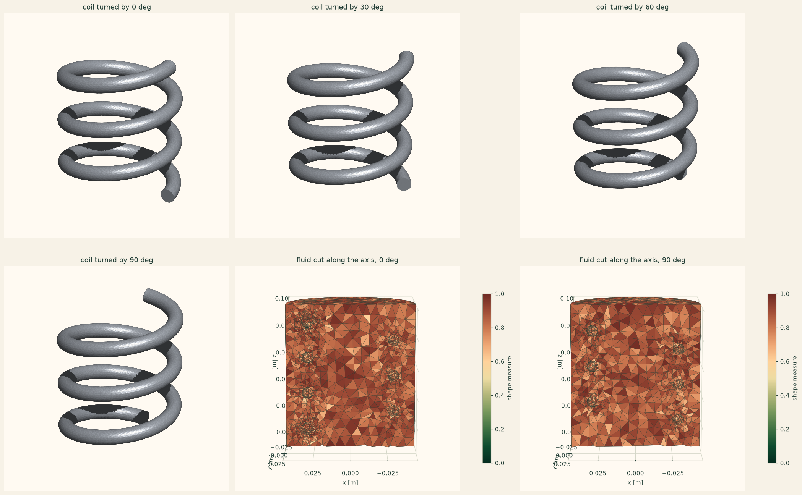

Docs › Examples › Rotating helix geometry
CAD geometry · 3D
Rotating helix geometry
A wire coil swept along a helix of three turns and turned in steps inside a vessel, with the fluid space meshed at every position.

What it computes
OneSimulation sweeps a circle along a helix path, turns the coil about its axis by 0, 30, 60 and 90 degrees and subtracts it from the vessel for each position; every fluid domain is meshed with tetrahedra.
What it checks
Helix length 570.4386 mm and end point equal the closed form, the coil volume matches pi a^2 L to 4e-6, the end point turns by exactly the rotation angle, and the fluid volume stays at 607.4990 cm3 at all four angles (closed form 607.4991 cm3; meshes of about 60,000 cells within 0.08 %).
The notebook
The complete notebook, cell by cell. Run it to produce the figures and the comparison printout.
Helical bodies appear in springs, coils of heat exchangers, screw conveyors and ribbon mixers. The CAD object Helix(radius, pitch, turns) is a path; Sweep(profile=..., path=helix) moves a profile along it with the profile always standing across the wire. A rotating helix is the same body turned about its axis by rotated(axis, angle): for a sequence of angles it gives the positions of a mixer blade, and the fluid domain at each position is the vessel minus the coil.
| quantity | value | |---|---| | helix radius \(R\), pitch \(p\), turns \(N\) | 30 mm, 25 mm, 3 | | wire radius \(a\) | 4 mm | | vessel radius and height | 45 mm, 100 mm |
Reference. A helix of radius \(R\) and pitch \(p\) has the length \(L = N\sqrt{(2\pi R)^2+p^2}\) and runs from \((R,0,0)\) to \((R\cos 2\pi N, R\sin 2\pi N, Np)\). A tube of radius \(a\) around a curve that does not cut itself has the volume \(\pi a^2 L\) (the theorem of Pappus and Guldin applied along the curve). Turning the coil leaves its volume and the fluid volume unchanged and turns its end point by the same angle.
import numpy as np
from onesim.cad.d2 import Profile
from onesim.cad.d3 import Cylinder, Helix, Sweep
from onesim.meshing import TetrahedralMesher
from onesim.meshing.quality import quality
from onesim.visualization import plots, theme
theme.set()The coil
The helix starts 12.5 mm above the floor of the vessel; the swept coil keeps the names start, end and side for its end faces and its wall.
radius, pitch, turns, wire = 0.03, 0.025, 3, 0.004
vessel_radius, vessel_height, lift = 0.045, 0.1, 0.0125
helix = Helix(radius=radius, pitch=pitch, turns=turns, origin=(0.0, 0.0, lift))
coil = Sweep(profile=Profile.circle(wire), path=helix)
length = turns * np.hypot(2 * np.pi * radius, pitch)
print(f"helix length {helix.length * 1e3:.4f} mm, closed form {length * 1e3:.4f} mm")
print(
f"coil volume {coil.measure * 1e6:.5f} cm3, pi a^2 L {np.pi * wire**2 * length * 1e6:.5f} cm3, "
f"deviation {coil.measure / (np.pi * wire**2 * length) - 1:+.1e}"
)
print(
f"end face centre {np.round(np.array(coil.topology.face(coil.boundary_groups()['end'][0]).center) * 1e3, 4)} mm, "
f"closed form {np.round(np.array([radius * np.cos(2 * np.pi * turns), radius * np.sin(2 * np.pi * turns), lift + turns * pitch]) * 1e3, 4)} mm"
)The coil turned inside the vessel
Four positions 30 degrees apart. For each the fluid domain is the vessel minus the turned coil, meshed with tetrahedra of at most 6 mm that turn by at most half a radian round the wire.
angles = np.radians([0.0, 30.0, 60.0, 90.0])
vessel = Cylinder(radius=vessel_radius, length=vessel_height)
turned = [coil.rotated((0, 0, 1), angle) for angle in angles]
fluids = [vessel - blade.named("coil") for blade in turned]
meshes = [
TetrahedralMesher(target_size=0.006, curvature_angle=0.5).generate(fluid)
for fluid in fluids
]
view = plots.Camera(elevation=22, azimuth=-60)
fig = plots.figure(1, 2, size=(16, 7))
plots.geometry(
coil,
selection={"start": coil.boundaries.start, "end": coil.boundaries.end},
labels=False,
camera=view,
title="Coil swept along a helix of three turns",
ax=fig[0],
)
plots.mesh(
meshes[0],
groups=("coil.side",),
legend=False,
camera=view,
title=f"Fluid mesh ({meshes[0].cell_count} tetrahedra): triangles on the coil",
ax=fig[1],
)
plots.show()Results
For every angle: the volume of the turned coil, the angle of its end point about the axis and the fluid volume of the CAD body and of its mesh.
fluid_exact = np.pi * vessel_radius**2 * vessel_height - np.pi * wire**2 * length
print(
"angle coil volume [cm3] end point angle fluid CAD [cm3] fluid mesh [cm3] closed form cells"
)
for angle, blade, fluid, mesh in zip(angles, turned, fluids, meshes):
end = np.array(blade.topology.face(blade.boundary_groups()["end"][0]).center)
print(
f"{np.degrees(angle):5.0f} {blade.measure * 1e6:16.5f} {np.degrees(np.arctan2(end[1], end[0])):14.2f} deg"
f" {fluid.measure * 1e6:16.5f} {quality(mesh)['size'].sum() * 1e6:17.5f} {fluid_exact * 1e6:13.5f} {mesh.cell_count:7d}"
)Figure
The four positions of the coil seen from above at an angle, and the vessel cut open along its axis with the cells around the turned coil.
fig = plots.figure(2, 3, size=(19, 12))
for index, (angle, blade) in enumerate(zip(angles, turned)):
plots.render(
blade,
camera=view,
material="steel",
title=f"coil turned by {np.degrees(angle):.0f} deg",
ax=fig[index],
)
for index in (0, 3):
plots.mesh(
meshes[index],
cell_values=quality(meshes[index])["shape"],
limits=(0, 1),
plane=((0.0, 0.0, vessel_height / 2), (0.0, 1.0, 0.0)),
label="shape measure",
camera=plots.Camera(elevation=10, azimuth=90),
title=f"fluid cut along the axis, {np.degrees(angles[index]):.0f} deg",
ax=fig[4 + index // 3],
)
plots.show()Going further
Use the turned fluid domains as the frames of a rotating-machinery model, give the coil a flat ribbon profile (Profile.rectangle) for a ribbon blender, or a left-handed helix (Helix(..., left_handed=True)) for a counter-rotating screw.